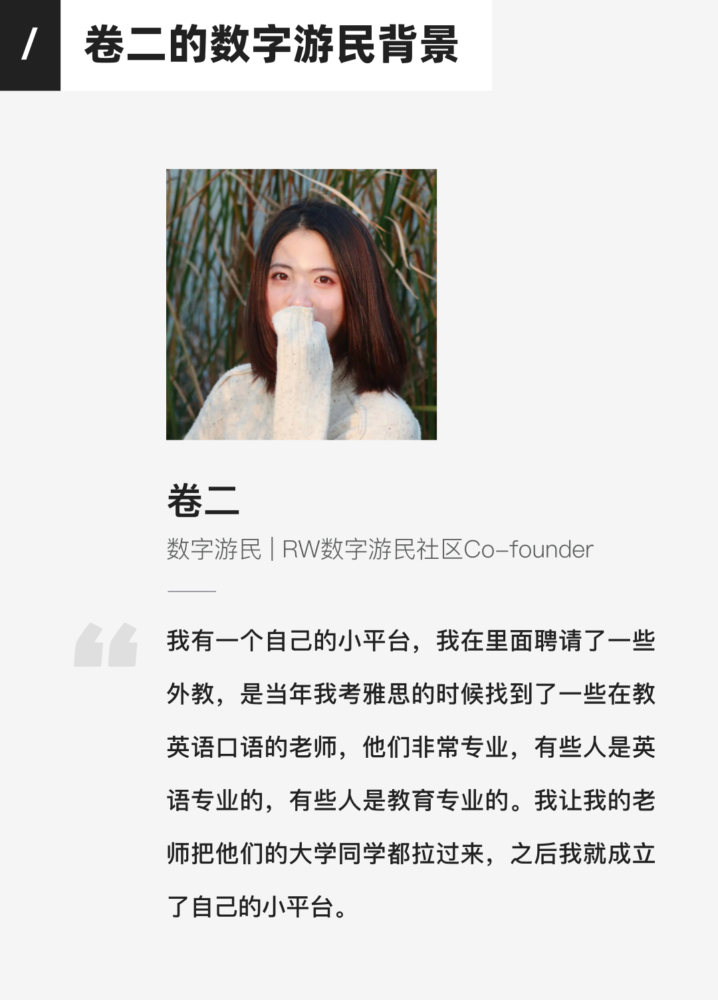
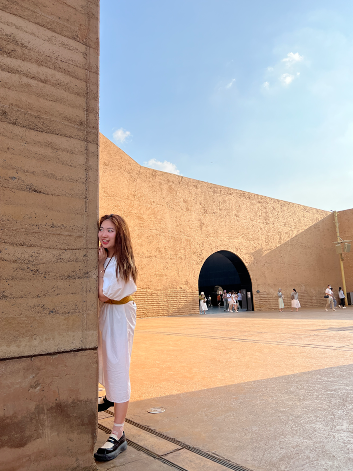
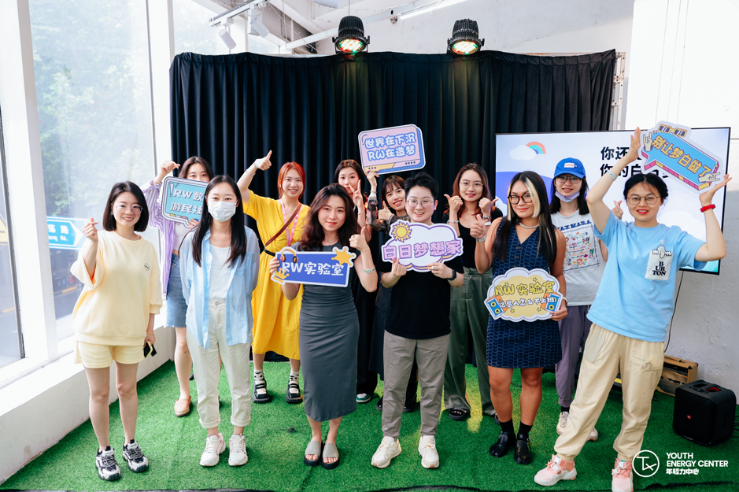
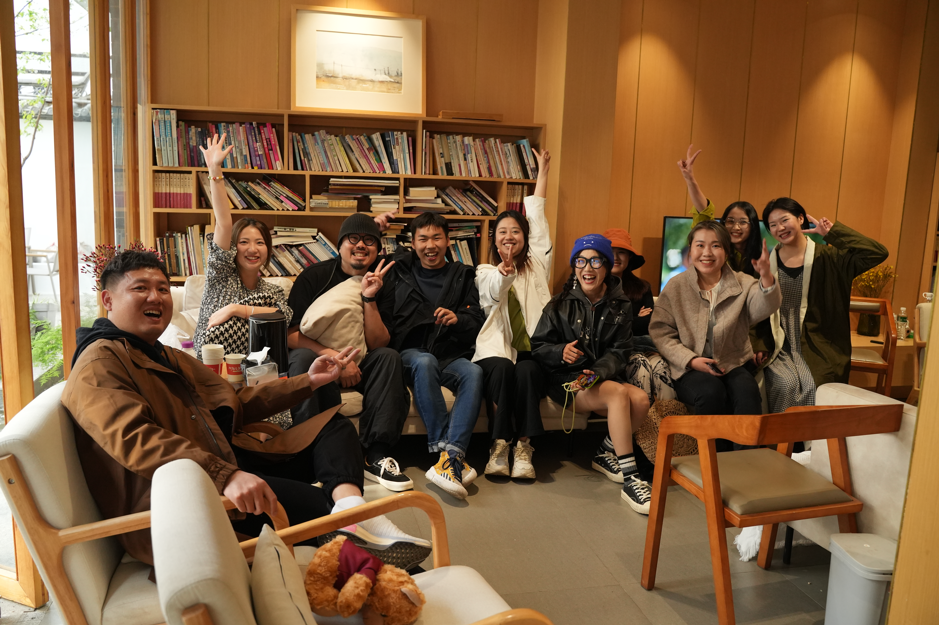
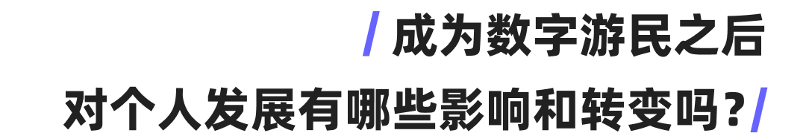

投稿 | 卷二：数字游民与在地空间的链接
作者: SeeDAO
分类:
SeeDAO, Web3, DAO, 数字游民, 数字游民分享会
我有一个自己的小平台，我在里面聘请了一些外教，是当年我考雅思的时候找到了一些在教英语口语的老师，他们非常专业，有些人是英语专业的，有些人是教育专业的。我让我的老师把他们的大学同学都拉过来，之后我就成立了自己的小平台。



数字游民都处在不同的行业，尤其是在设计类、翻译、Web3、自媒体等方向的行业比较多。对于一些数字游民来说，他们可能会有一段时间的工作经历，这段时间可以让他们获得技能方面的成长，从而有能力去接一些项目；他们之前合作过的客户资源也是他们的一种稳定资源，如果他们的口碑好的话，这些客户会持续地介绍新的客户。对于00后的数字游民来说，如果他们一开始就是数字游民，可能是因为他们很早就开始从事自媒体或者进入了Web3或AI等新兴行业，从而拥有了比较广泛的资源。我有一个自己的小平台，我在里面聘请了一些外教，是当年我考雅思的时候找到了一些在教英语口语的老师，他们非常专业，有些人是英语专业的，有些人是教育专业的。我让我的老师把他们的大学同学都拉过来，之后我就成立了自己的小平台。我在考雅思的时候加入了很多相关的雅思群，这样我的精准客户和已有的资源就串联在了一起。我觉得要获客或者找到合适的资源，就一定要精准定位，这样可以省去很多时间和精力成本。图片来自@卷二
我是一个喜欢收集有趣小物件的极繁主义者。在旅行中，我总是希望将行李箱塞满，但也意识到需要随着季节变化更换衣物。我常常感到自己被消费主义和购买新物品的欲望所困扰，这导致我的行李过多。在旅行的早期阶段，我经常住在朋友家，与他们交换衣物以保持物品的流动。后来，我开始举办“闲置物品交流”活动，与其他数字游民交流物品。随着时间的推移，我意识到需要简化我的物品，并开始制定使用频率和多功能性清单。图片来自@卷二
当RW来到大理时，我们对当地的人一无所知。为了真正融入这个地方，我们需要建立自己的社群和朋友圈。我们开始举办各种活动，包括室内和室外，目的是让自己和其他人融入当地社区。这些活动并没有事先计划，一切都是自然而然地发生的。在短短两个月内，我们举办了近20场活动，邀请了当地旅行者和年轻人参加。我们吸引了很多志同道合的人加入，建立了一个五六百人的社群。在共居的环境中，大家的关系也更加紧密，这种自然的方式让人们更容易参与和融入社区。图片来自@卷二

一方面是持续地向内探索，另一方面是持续地向外探索。向内探索意味着发展自我，了解自己的喜好、能力和价值观。这包括试错和淘汰不适合自己的事物，以及深入接触前线和在地的经验，与人交流、接触大自然，从中获取重要的人际和生活经验。同时，也需要关注个人的谋生技能，找到适合自己的经济收入来源，并培养独立思考和判断能力，坚定自己的内核并抵抗外部环境的动摇。向外探索则是在内在探索的基础上，寻找更多可能性和机会。这可能涉及利用自己的技能和资源，打通一整套的发展路径。可以通过参与社区、平台或自媒体等方式，拓宽自己的影响力和变现途径。同时，也可以在旅行或经历中寻找特定的机会，学习新的技能，丰富自己的经验和知识。这种向外探索的过程可以为个人带来更多的经济和发展可能性，以及更广阔的视野。—
内容来源 | 小姚
设计排版 | T1NG
审核 | Ines